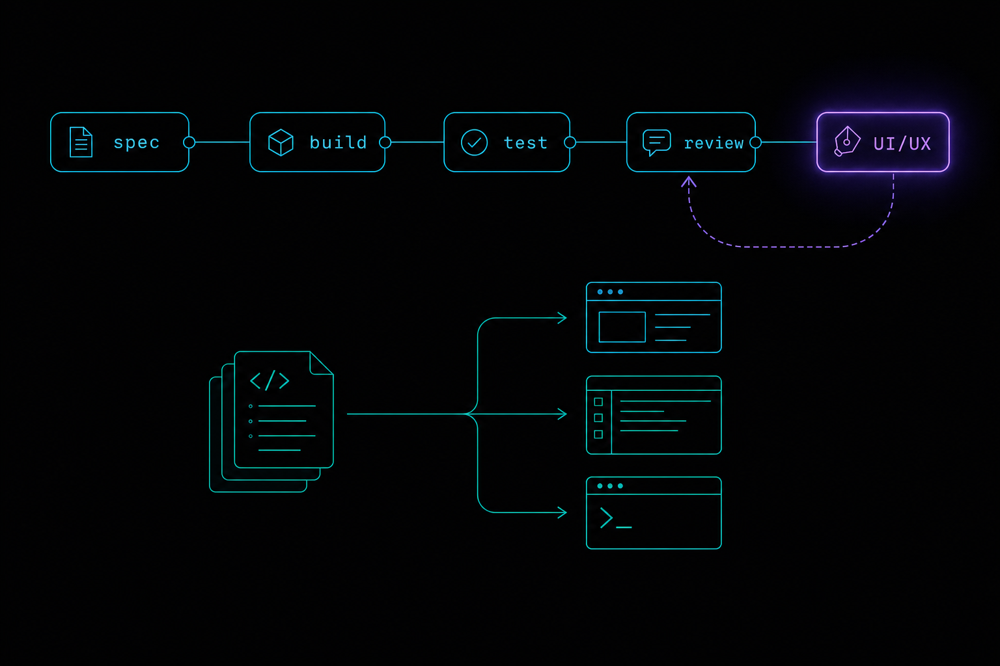
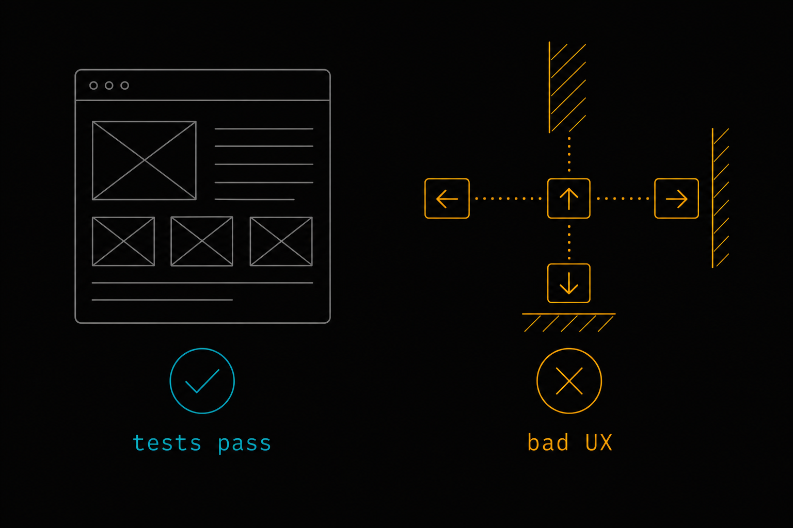
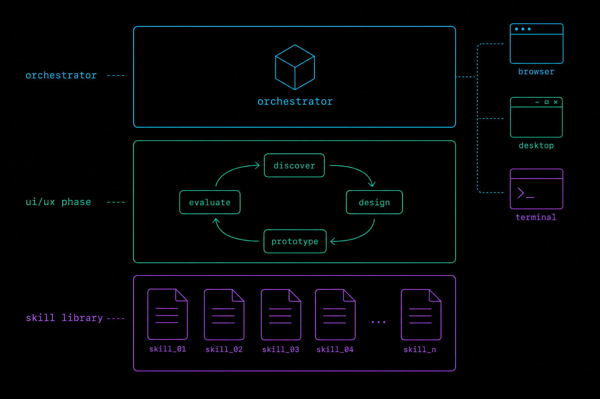
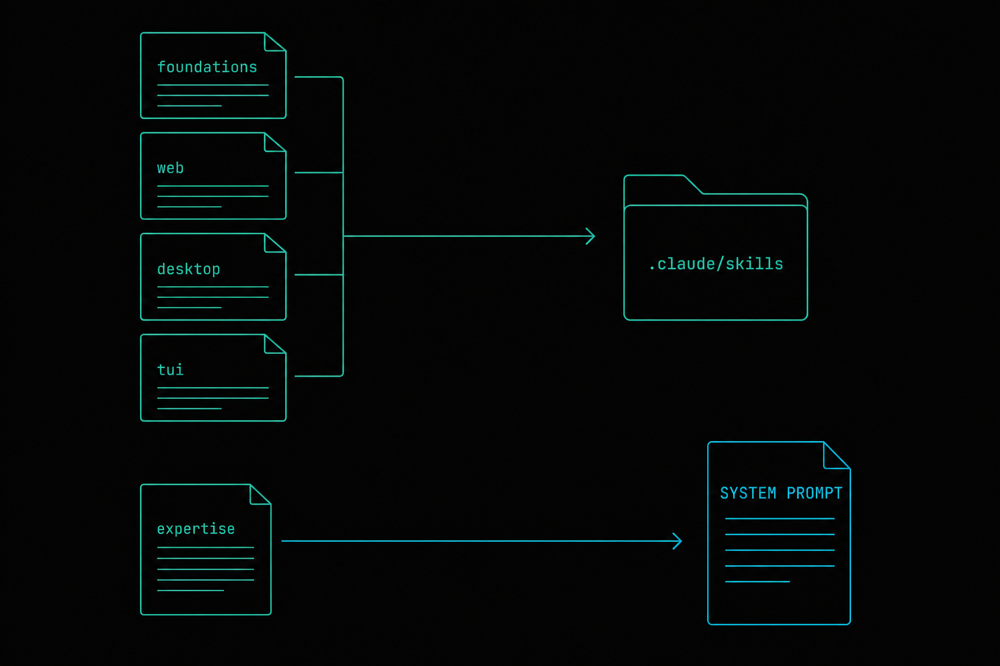
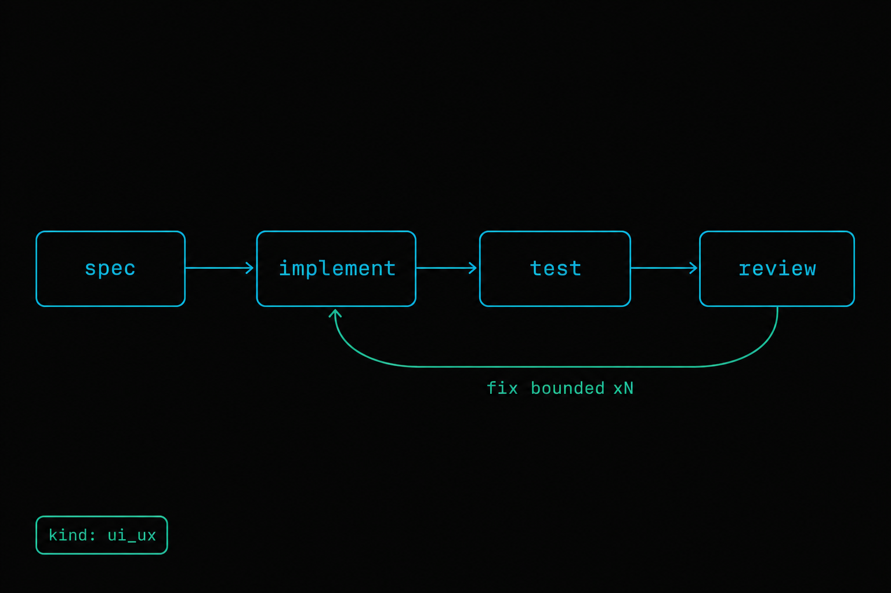
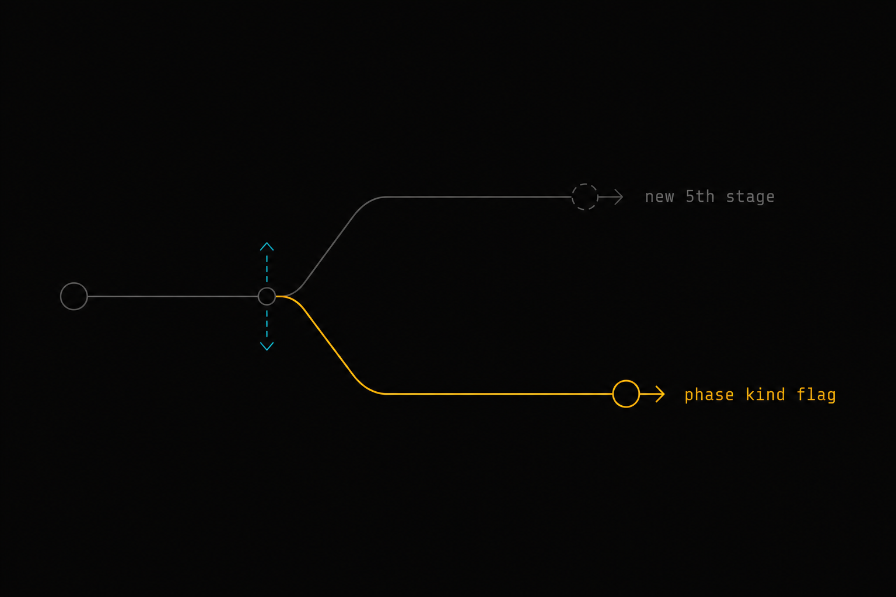
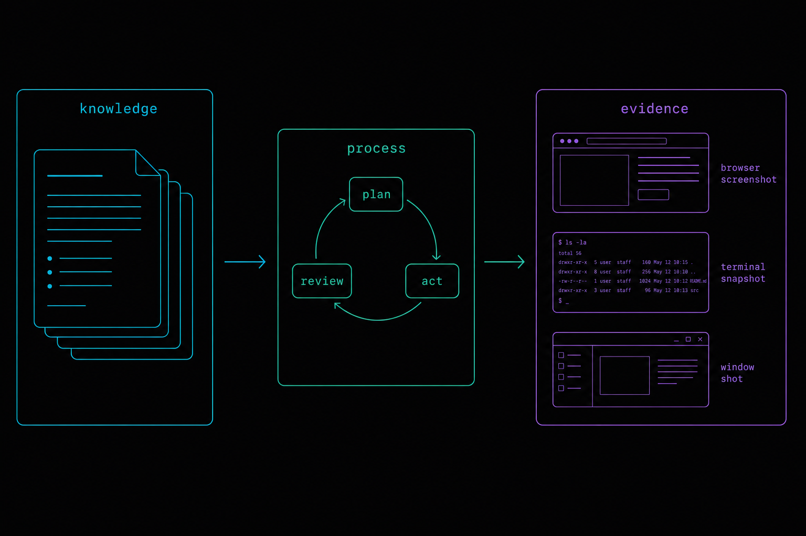

Iterative UI/UX Polish Phase
A skill-driven, surface-aware front-end layer the orchestrator runs after the backend is built — iterating web, desktop, and TUI experiences up to a decent MVP.

Purpose
Give the autonomous orchestrator (Claude or pi) an explicit, iterative front-end layer that runs after the backend is delivered. When a generated app has a user-facing surface — a web app, a desktop/PC app, or a TUI — the orchestrator should plan and drive one or more UI/UX polish phases that loop until the experience reaches a decent MVP: tight navigation, no obvious UX traps, consistent visual language, and accessible defaults. The knowledge that raises quality is packaged as curated skill files (SKILL.md bundles) plus a UI/UX expertise domain, fed to the workers and orchestrator through mechanisms the platform already has.
Problem
Today the workstream stage machine is spec → implement → test → review (see @stage_order in workstreams.ex:75). Those stages optimize for correctness: does the backend work, do tests pass, does review approve the diff. Nothing in the loop optimizes for experience. In practice the user had to hand-author several UI/UX planning specs (console parity, provider dropdown, swimlanes) after the fact to make navigation tight and kill bad UX — exactly the work the platform should perform on its own. The result of "build it and stop at green tests" is functional-but-flat UI: the generic AI-slop tells (oversized cards, soft shadows, no visual hierarchy, dead-end navigation), and no per-surface awareness that a TUI, a desktop app, and a web app each demand different UX affordances.

Solution
Add a UI/UX phase kind to the existing workstream machinery rather than inventing a parallel system. Three coordinated pieces:
- A curated UI/UX skill library — a vendored plugin (
plugin_library/ui-ux-mvp/) shippingSKILL.mdbundles:ui-ux-foundations(universal principles) plus one per surface (web-ui-polish,desktop-ui-polish,tui-ux-polish), and a matchingui-ux-mvpexpertise domain. These reach workers via the already-writtenSkillPack.materialize/2(wired in at last) and reach the orchestrator viaexpertise_block/1. - A surface-aware, iterative phase — phases carry a
kind(:backend | :ui_ux) and asurface(:web | :desktop | :tui). A:ui_uxphase runs the same four stages, but the stages are UI-flavored: spec = a UX design brief, implement = build/refine the interface, test = visual/behavioral validation (Playwright screenshots for web, terminal snapshots for TUI), review = a UX rubric review whose failure re-enters the fix loop. The existingreview → failed → fix → re-reviewstall machine is the iteration engine — bounded by a UX iteration cap so it converges to MVP instead of gold-plating. - Orchestrator guidance — extend
phased_delivery_block/0so that, after backend phases pass, the orchestrator detects whether the app has a front-end surface and, if so, appends UI/UX phase(s) viaplan_phases, then drives them to done.
:ui_ux phase is just a phase with a different kind, different skills in context, and a visual test gate. Everything already rehydrates through get_workstream.
Research (firecrawl)
Scraped to ground the skill-file design against how the ecosystem actually packages UI/UX knowledge for coding agents.
| Source | What it confirms for this plan |
|---|---|
| Anthropic — Agent Skills overview | Canonical SKILL.md = YAML frontmatter (name, description) + body, with progressive disclosure across three levels: metadata always loaded (~100 tok), body loaded when triggered (<5k tok), bundled resources loaded on demand (unlimited). This maps 1:1 onto our repo's skills/<name>/SKILL.md + SkillPack.materialize/2 and the Forge :skill contribution kind. description must state what AND when. Reserved words: no "anthropic"/"claude" in name. |
| nextlevelbuilder/ui-ux-pro-max-skill, Front-End Checklist, AI UX Playground | Real, widely-forked UI/UX skills organize knowledge as: multi-platform design intelligence, accessibility (WCAG, focus, contrast), color / typography / spacing / layout systems, and component patterns — the exact section set our SKILL.md bodies should encode. Confirms surface-specific skills (web vs. native vs. terminal) are the right granularity. |
| "Fixing Visual AI Slop with Front-End Design Skills" | Names the failure mode precisely — purple gradients, oversized rounded cards, soft shadows, copied layouts. Our ui-ux-foundations skill should carry an explicit "avoid these AI tells" anti-pattern list as a review-rubric input. |
Relevant Files
Existing Files
- existing
lib/repo_builder/orchestrator/workstreams.ex— stage machine;@stage_order(l.75),plan_phases/3,record_stage/3,transition/3,promote_next_phase. Carries thekind/surface+ iteration cap logic. - existing
lib/repo_builder/orchestrator/workstream_phase.ex— phase schema (@stages,@current_stages, JSONBstages). Gainskind,surface,iterationcolumns. - existing
lib/repo_builder/orchestrator/system_prompt.ex—phased_delivery_block/0(l.567–592),expertise_block/1,reflections_block/1. Gains UI/UX guidance + aui-ux-mvpexpertise mapping. - existing
lib/repo_builder/orchestrator/tool_catalog.ex— single source of truth for tool defs (drives MCP + pi manifest).record_stageschema and any new UI helper tool registered here. - existing
lib/repo_builder/orchestrator/tools.ex— dispatch +plan_phases/record_stage/normalize_phases. Extended to passkind/surfacethrough. - existing
lib/repo_builder/plugins/skill_pack.ex—materialize/2copies active:skillcontributions into.claude/skills/. Currently defined but not called — this plan wires it into worker launch. - existing
lib/repo_builder/expertise.ex— versioned domain mental models (render/1,save/3), injected viaexpertise_block/1. - existing
priv/forge/generators/skill.md— the Forge generator template that authorsSKILL.mdbundles; reference for hand-authored skills. - existing
lib/repo_builder_web/components/dashboard_components.ex+live/console_live.ex— Workstreams panel; surfaces the new:ui_uxphase kind distinctly. - existing
.claude/agents/playwright-validator+playwright-reports/— visual validation seam reused as the UI/UX test gate for web surfaces. - existing
playwright-cli(shell tool / skill) — harness-agnostic browser automation: a11y-ref click/type/fill, disk-saved snapshots, network mocking, and.spec.tsgeneration. The deterministic pass/fail gate that works for Claude andpi. - existing
chrome-devtools-mcp(MCP) + Tidewavebrowser_eval— Claude-worker troubleshooting layer: console, network bodies/timing, Core Web Vitals, throttling; Tidewave adds Phoenix/LiveView runtime intelligence.
New Files
- new
plugin_library/ui-ux-mvp/plugin.json— manifest declaring the:skillcontributions (+ optional:context_fragment). - new
plugin_library/ui-ux-mvp/skills/ui-ux-foundations/SKILL.md— universal UX principles, hierarchy, accessibility, the "avoid AI-slop tells" anti-pattern list, and the review rubric. - new
plugin_library/ui-ux-mvp/skills/web-ui-polish/SKILL.md— responsive layout, semantic HTML, focus/keyboard nav, Tailwind/DaisyUI-friendly patterns, Playwright self-check recipe. - new
plugin_library/ui-ux-mvp/skills/desktop-ui-polish/SKILL.md— window/menu conventions, native affordances, density, keyboard shortcuts. - new
plugin_library/ui-ux-mvp/skills/tui-ux-polish/SKILL.md— terminal layout, key bindings, focus/selection, color-safe/no-color fallbacks, snapshot self-check. - new
priv/orchestrator/experts/ui-ux-mvp/0001.md— orchestrator-facing expertise: when to run a UI/UX phase, how to scope it per surface, the iteration/exit criteria. - new
lib/repo_builder/orchestrator/surface_detector.ex— reads the built repo (assets, deps, entry points) and classifies its front-end surface(s)::web | :desktop | :tui | :none. - new
priv/repo/migrations/<ts>_add_ui_ux_to_workstream_phases.exs— addskind,surface,iterationcolumns toorchestrator_workstream_phases. - new
test/repo_builder/orchestrator/ui_ux_phase_test.exs,surface_detector_test.exs,skill_pack_materialize_test.exs— coverage for the new seams.
Implementation Phases
IMPORTANT: Execute every phase and task step by step, in order, top to bottom.
Status markers: [] idle · [wip] in progress · [x] complete · [f] failed. All start as []; the Build Plan workflow updates them as it works.
[] Phase 1: UI/UX Skill Library + expertise
Author the curated knowledge assets and make the plumbing that delivers them real. This phase ships value even before the phase machine changes: any worker can already consume materialized skills.

.claude/skills/; expertise injects into the orchestrator prompt.1. Author the skill bundles
[]Createplugin_library/ui-ux-mvp/plugin.jsondeclaring four:skillcontributions (paths to eachSKILL.md), followingai_docs/plugin-authoring.mdand the existingplugin_library/forge-meta/plugin.jsonas the reference manifest shape.[]Writeui-ux-foundations/SKILL.md— frontmattername: ui-ux-foundations, a what+whendescription; body covers visual hierarchy, spacing/typography scale, color/contrast, accessibility (focus, keyboard, WCAG AA), and an explicit "avoid AI-slop tells" list (from research). Keep body < 500 lines; push detail to sibling files (progressive disclosure).[]Writeweb-ui-polish/SKILL.md,desktop-ui-polish/SKILL.md,tui-ux-polish/SKILL.md— each with a surface-specific checklist + a self-validation recipe (web → Playwright screenshot; tui → terminal snapshot).[]Authorpriv/orchestrator/experts/ui-ux-mvp/0001.md— orchestrator mental model: when a UI/UX phase is warranted, per-surface scoping, iteration cap and MVP exit criteria.
2. Wire skill materialization into worker launch
[]CallSkillPack.materialize(project_id, worker_working_dir)at the point a worker/harness session is launched (harness registry / session server), so active:skillbundles land in the worker's.claude/skills/before it runs. Fail-soft on error (mirrorcontext_fragments/1best-effort pattern).[]Mapui-ux-mvpintoexpertise_block/1's stack-layer → domain resolution so the orchestrator prompt renders it when a front-end surface is present.
3. Testing Strategy
Assert the assets parse and the delivery path works. Use ExUnit + a temp target dir; validate frontmatter with the same rules Forge/Anthropic require (name charset, non-empty description).
[]mix test test/repo_builder/orchestrator/skill_pack_materialize_test.exs— proves active skills copy into a target.claude/skills/and bad manifests fail soft.[]A frontmatter lint test — every newSKILL.mdhas validname(lowercase/hyphen, no reserved words) and non-emptydescription≤ 1024 chars.[]mix testcoveringexpertise_block/1rendersui-ux-mvpwhen the domain is active.
[] Phase 2: Surface detection
Give the orchestrator a deterministic way to answer "does this app have a front end, and what kind?" — the gate that decides whether a UI/UX phase runs at all.
1. Build the detector
[]CreateSurfaceDetector.detect(working_dir) :: {:ok, [:web | :desktop | :tui]} | {:ok, []}. Heuristics: web →assets/,package.jsonwith a bundler, HTML/JSX/LiveView templates, a served port; desktop → Electron/Tauri/native GUI deps; tui → curses/ratatui/blessed/ink/bubbletea-style deps or a terminal entry point. Repo-agnostic — inspect files/manifests, do not assume a language.[]Return multiple surfaces when present (an app can be both web + tui); empty list ⇒ no UI/UX phase.[]Expose it to the orchestrator: extendinspect_repo(tools.ex + tool_catalog.ex) with asurfacesfield, or add a thindetect_surfacestool — reuseinspect_repoif possible to keep the tool count stable.
2. Testing Strategy
Table-driven fixtures: tiny fake repo trees for web / desktop / tui / none, asserting classification. No network, pure filesystem.
[]mix test test/repo_builder/orchestrator/surface_detector_test.exs— each fixture classifies correctly, including the multi-surface and none cases.[]mix testcovering theinspect_repo/tool surface exposure returns the detected list.
[] Phase 3: UI/UX phase kind + iteration cap
Teach the durable phase machine that a phase can be a :ui_ux phase for a given surface, and bound its review→fix loop so it converges to MVP.

1. Schema + machine
[]Migrationadd_ui_ux_to_workstream_phases— addkind(default"backend"),surface(nullable),iteration(default 0) toorchestrator_workstream_phases.[]ExtendWorkstreamPhaseschema + changeset with validatedkind ∈ {backend, ui_ux}andsurface ∈ {web, desktop, tui, nil}.[]Inworkstreams.extransition/3: on a:ui_uxphase, a failed review incrementsiterationand re-enters the fix branch only whileiteration < ui_iteration_cap(config, default 3); at the cap, mark the phase:donewith a "MVP reached / capped" note instead of blocking, so polish never stalls the workstream forever.[]Threadkind/surfacethroughplan_phases/3+normalize_phases/1(tools.ex) and theplan_phasestool schema (tool_catalog.ex), defaulting tobackendso existing behavior is unchanged.
2. UI-flavored stage semantics
[]Document (in the expertise + system prompt) that for a:ui_uxphase the four stages mean: spec = UX design brief; implement = build/refine UI; test = visual/behavioral validation (Phase 4); review = UX rubric review fromui-ux-foundations.[]Ensureget_workstream/list_workstreamsrecord maps includekind,surface,iterationso rehydrate-on-resume reconstructs UI/UX progress aftercompact_self.
3. Testing Strategy
Drive the state machine directly with ExUnit + the Ecto sandbox — assert iteration accounting, the cap, and that backend phases are byte-for-byte unchanged.
[]mix test test/repo_builder/orchestrator/ui_ux_phase_test.exs— a:ui_uxphase loops on failed review, incrementsiteration, and auto-completes at the cap without blocking.[]mix testregression on existing workstream tests —:backendphases behave identically (default kind).[]mix ecto.migratethenmix ecto.rollback— migration is reversible.
[] Phase 4: Visual/behavioral validation gate
Make the UI/UX phase's test stage produce real evidence instead of a self-report — and, on failure, real browser-level diagnostics that drive the fix loop. A harness-agnostic CLI gate decides pass/fail; MCP diagnostics explain why when available.
playwright-cli (a shell tool — works from Claude and pi, snapshots to disk, no context flooding) is the deterministic gate and emits a durable .spec.ts regression test. chrome-devtools-mcp + Tidewave browser_eval (MCP — Claude workers) are the troubleshooting layer: console, network bodies/timing, Core Web Vitals, throttling, LiveView runtime state.1. Evidence capture per surface (the gate)
[]Web — evidence contract = screenshot + accessibility snapshot + console log + network log. Drive the built app with theplaywright-clishell tool; snapshots save to disk underplaywright-reports/<timestamp>/. Because it's a CLI (not MCP) it runs identically under Claude andpi. Pass/fail on the UX rubric (nav reachable, focus visible, no console errors, no failed requests).[]Web — also generate a durable.spec.tssmoke test viaplaywright-cliso each polish iteration leaves behind regression coverage, not just a screenshot.[]Preferplaywright-cliover raw Playwright MCP for these multi-step flows — MCP snapshots flood the worker's context window; the CLI writes artifacts to disk (matters undercompact_selfpressure).[]TUI: capture a terminal snapshot (rendered output) as the artifact; assert layout/keybinding invariants fromtui-ux-polish.[]Desktop: capture a window screenshot where the harness can launch it; otherwise record[f]/blocked with a clear reason (honest reporting, no silent skip).[]Attach the evidence path(s) as theartifactonrecord_stage("test", …)so they rehydrate and show in the console.
2. Troubleshooting diagnostics (feed the fix loop on failure)
When the gate fails, don't hand the review→fix loop a bare "failed" — hand it a cause. This layer is enrichment: it deepens diagnosis where MCP is available but never gates correctness.
[]chrome-devtools-mcp(Claude workers): on a failed gate, pull full network request/response bodies + timing, console errors, a performance trace / Core Web Vitals, and reproduce under CPU/network throttling. Record the root-cause note onrecord_stageso the fix is targeted.[]Tidewavebrowser_eval(Phoenix/LiveView targets only): when the generated app is itself Phoenix, use runtime intelligence — eval in the running app, inspect LiveView assigns, read server logs — as the deepest diagnostic.[]Harness note:chrome-devtools-mcpand Tidewave are MCP → Claude workers only.piworkers still get console + network from theplaywright-clicapture in Task 1 (deterministic, just less deep) — so the loop degrades gracefully, never breaks.
3. Testing Strategy
Unit-test the evidence-routing/report-writing logic with a stubbed validator; keep the actual browser run as the live acceptance step (like existing E2E).
[]mix test— the test-stage evidence router picks the right capture persurface, writes report path(s) onto the phase, and records a failure note when the rubric fails.[]Live acceptance (manual, documented): run a UI/UX phase against a sample web app; confirm theplaywright-cliscreenshots + console/network logs land inplaywright-reports/, the generated.spec.tsruns green, and a failed rubric captures achrome-devtools-mcproot-cause note before re-entering the fix loop.
[] Phase 5: Orchestrator guidance + console surfacing
Close the loop: teach the orchestrator when to run UI/UX phases and show them clearly in the console.
1. Prompt + guidance
[]Extendphased_delivery_block/0: after backend phases pass, call surface detection; if a surface exists, append UI/UX phase(s) (one per surface) viaplan_phaseswithkind: "ui_ux", and drive them to done beforereport_complete. Keep it bounded (respect the iteration cap; don't gold-plate).[]Ensure theui-ux-mvpexpertise + reflections carry the "stop at MVP" discipline so autonomous runs converge.
2. Console
[]In the Workstreams panel (dashboard_components.ex/console_live.ex) render:ui_uxphases distinctly (surface badge + iteration N/cap) and link the visual evidence.
3. Testing Strategy
Phoenix LiveViewTest for the console; assertion tests on the prompt block; full green gate.
[]mix test—phased_delivery_block/0contains the UI/UX guidance; Workstreams panel renders a:ui_uxphase with surface + iteration.[]Run the full green gate (see Validation Commands).
Validation Commands
Execute these commands to validate the entire plan is complete (the repo's enforced 5-command green gate + migration reversibility):
[]mix compile --warnings-as-errors— no warnings introduced.[]mix format --check-formatted— formatting clean.[]mix credo --strict— passes strict lint incl. the@specgate on new modules.[]mix test --warnings-as-errors— full suite green, including new UI/UX, surface-detector, skill-pack tests.[]mix dialyzer— no new type errors across new wire boundaries.[]mix ecto.migrate && mix ecto.rollback && mix ecto.migrate— migration up/down/up is clean.
Questionables

Extend the stage machine with a 5th stage (e.g. :ux_polish) vs. a phase kind flag?
Assumption: phase kind. Adding a global 5th stage forces every phase (including pure-backend ones) through it and rewrites next_stage/1, @stage_order, and every stage test. A kind/surface flag on the phase reuses the proven four-stage machine unchanged, defaults keep backend behavior identical, and it lets a workstream mix backend and UI/UX phases. Lower blast radius, fully rehydratable. Revisit only if UI/UX genuinely needs stages the four don't model.
Where do the skill files come from — hand-authored, Forge-generated, or scraped at runtime?
Assumption: hand-authored/curated now, Forge-refreshable later; never scraped at runtime. The user clarified firecrawl is a research tool for authoring this plan, not a repo dependency. We ship vetted SKILL.md bundles in plugin_library/ui-ux-mvp/; the Forge :skill generator can later regenerate/extend them from a spec. Runtime scraping is explicitly out of scope (security + determinism).
Should UI/UX phases run in parallel with backend phases, or strictly after?
Assumption: strictly after backend phases pass, per the user's "after building the backend and going through all the steps." The workstream layer already supports multiple parallel workstreams, so a future optimization could open a UI/UX workstream early — but the safe, matching-the-ask default is: backend phases green → detect surface → append UI/UX phases.
What is the MVP exit criterion for the iteration loop?
Assumption: rubric-pass OR iteration cap (default 3), whichever first. "Decent MVP" is deliberately not "pixel-perfect." The ui-ux-foundations rubric (hierarchy present, nav reachable, focus visible, no AI-slop tells, no console/render errors) is the pass bar; the cap prevents infinite polishing. Both are config so a project can raise the bar.
Which browser tool drives the web test gate — and does MCP break harness-agnosticism?
Assumption: playwright-cli (a shell tool) is the gate; MCP is optional enrichment. The gate must run identically under Claude and pi, so it cannot depend on MCP (pi has none). playwright-cli is a CLI → harness-agnostic, disk-saved snapshots (context-friendly under compact_self), and it emits durable .spec.ts regression tests. chrome-devtools-mcp (console, network bodies/timing, Core Web Vitals, throttling) and Tidewave browser_eval (Phoenix runtime state) are Claude-only troubleshooting layers that deepen diagnosis on failure but never decide pass/fail — so the loop degrades gracefully on pi instead of breaking. Prefer playwright-cli over raw Playwright MCP everywhere (MCP snapshots flood context).
Desktop-app validation coverage?
Open risk. Web (Playwright) and TUI (snapshot) have clean headless evidence paths; arbitrary desktop GUIs may not launch in the harness environment. Plan degrades honestly: capture a screenshot when possible, else record blocked/[f] with reason rather than faking a pass. Full desktop visual validation may warrant its own follow-up spec.
Notes
Why this fits the platform's grain
The repo already treats knowledge and process as separable, durable, rehydratable things: expertise domains, reflections, context fragments, skill packs, and a spec-driven phase machine. This plan adds nothing structurally new — it composes those primitives:
- Knowledge in:
SKILL.mdbundles (workers) +ui-ux-mvpexpertise (orchestrator) + reflections ("what UX fixes worked last run"). - Process: a
:ui_uxphase kind on the existingspec → implement → test → reviewmachine, with the review→fix loop bounded by an iteration cap. - Evidence: the existing Playwright seam becomes the UI/UX test gate; TUI snapshots and desktop screenshots fill the other surfaces.
Progressive disclosure = token discipline
Per the Anthropic Skills model, each SKILL.md keeps its always-loaded footprint to frontmatter (~100 tokens) and its triggered body under ~5k tokens, pushing exhaustive checklists/examples into sibling files loaded on demand. This keeps the worker's context lean even with four UI/UX skills installed — critical given compact_self pressure on long autonomous runs.
Surface vocabulary
| Surface | Detect signal (examples) | Test-gate evidence |
|---|---|---|
:web | assets/, bundler in package.json, HTML/JSX/LiveView templates, served port | Playwright screenshots + rubric checks |
:desktop | Electron/Tauri/native GUI deps | window screenshot, else honest block |
:tui | curses/ratatui/ink/bubbletea-style deps, terminal entry point | terminal snapshot + layout/keybinding asserts |
Config knobs (all defaulted, override per project)
:ui_iteration_cap— default3; max review→fix loops before a UI/UX phase auto-completes at MVP.:ui_ux_enabled— defaulttrue; global off-switch so pure-backend/library builds skip detection entirely.
References
- Anthropic — Agent Skills overview (SKILL.md format, progressive disclosure).
- Anthropic — Skill authoring best practices.
- ui-ux-pro-max-skill, Front-End Checklist, AI UX Playground — real UI/UX skill structure.
- Internal:
ai_docs/plugin-authoring.md,ai_docs/meta-artifacts.md,priv/forge/generators/skill.md. - Prior UI specs (back refs): console UI parity, provider dropdown, stage swimlanes.

Amendments
2026-07-01 — Plan created
Initial authoring via planf3. Scope corrected mid-session: firecrawl is a research tool for this plan, not a repo dependency. Image slots left as commented placeholders pending the image-generation subworkflow.
2026-07-01 — Phase 4 tool stack refined + images embedded
All 7 images generated (gpt-image-2) and embedded. Phase 4 restructured into a two-layer browser tool stack: playwright-cli (harness-agnostic shell tool) as the deterministic pass/fail gate emitting a durable .spec.ts regression test, and chrome-devtools-mcp + Tidewave browser_eval (Claude-worker MCP) as the on-failure troubleshooting layer (console, network bodies/timing, Core Web Vitals, throttling, LiveView state). Added the corresponding Relevant Files entries and a Questionable on gate-vs-enrichment / harness-agnosticism.